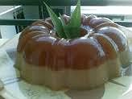

Puding Kopyor Saus Vanilli

Bahan:
- 750cc santan dari ¾ butir kelapa tua
- 300cc sirup rozen
- 3 bungkus agar – agar bubuk
- 350cc kelapa kopyor yang sudah diblender
- 6 butir telur (kocok sampai putih)
- 1 butir putih telur (kocok sampai kaku)
- jika mahu tambah kan perasa chocolate/chocolate paste
Saus Vanili:
- 3 butir kuning telur
- 75gram gula pasir
- 1 sendok teh maizena (larutkan dengan air)
- 1 sendok teh vanili
- 600cc susu cair
- Rum secukupnya
Cara Membuat:
- Campur santan, sirup dan agar – agar dalam panci, masak sampai mendidih sambil terus diaduk. Masukkan kelapa kopyor (diambil dari 1 butir kelapa kopyor lalu dicampur dengan 125cc air) biarkan sampai mendidih, kecilkan api.
- Ambil 1-2 sendok makan sayur agar – agar panas, campur dengan telur yang sudah dikocok (2 butir telur), aduk rata. Kemudian masukkan campuran telur ke dalam panci agar – agar, aduk sampai rata. Angkat panci.
- Ambil 1-2 sendok makan sayur adonan agar – agar tersebut campurkan dengan putih telur yang sudah dikocok, aduk sampai rata, masukkan campuran.
- Masak lagi sebentar di atas api kecil, kemudian angkat. Aduk terus adonan hingga agak dingin. Tuang ke dalam cetakan yang telah dibasahi air.
Cara Membuat Saus Vanili:
- Kocok telur, gula dan vanili sampai kental lalu masukkan tepung maizena yang telah dilarutkan. Aduk rata.
- Campurkan susu, masak di atas api kecil sampai matang. Angkat.
- Biarkan sampai agak dingin. Beri rum.
Hidangkan pudding kopyor dengan saus vanili.